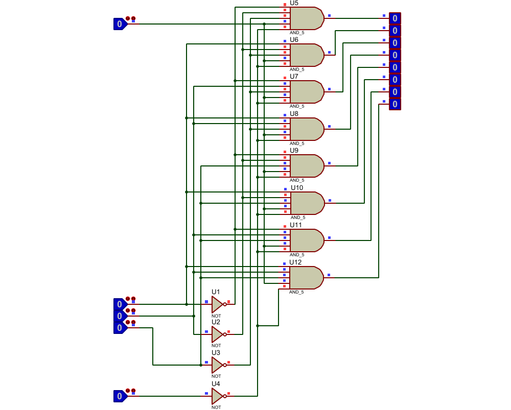

Demultiplexores
El demultiplexor es un dispositivo que puede recibir una señal compleja multiplexada a través de un medio de transmisión compartido y separar las distintas señales integrantes de la misma encaminándolas a las salidas correspondientes.
